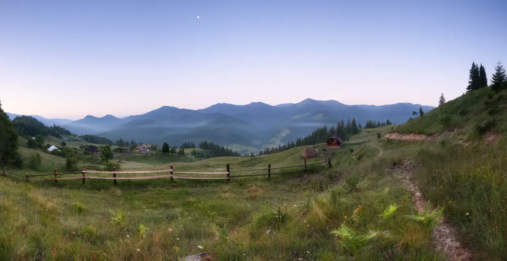

Регіони Карпат
П'ять масивів, які найкраще підходять для першого походу: від лагідних полонин Боржави до двотисячників Чорногори.
Де це на карті
Завантажуємо карту…
Завантажуємо регіони…

П'ять масивів, які найкраще підходять для першого походу: від лагідних полонин Боржави до двотисячників Чорногори.
Завантажуємо карту…
Завантажуємо регіони…